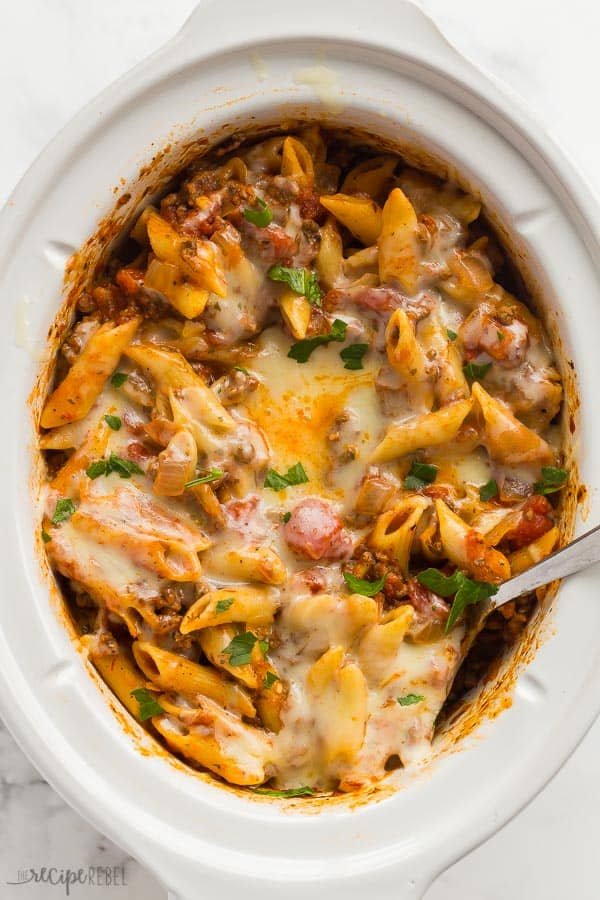

Baked Ziti

Description
Baked Ziti made in the slow cooker to save you time!
Pasta mixed with delicious veggies and topped with creamy cheese.
Ingredients
- Ground beef
- Onion
- Spices
- Canned diced tomato
- Pasta sauce
- Chicken broth
- Ziti or penne pasta
- Shredded mozzarella cheese
Steps
- Cook ground beef and onion until browned. Stir in spices
- Add all ingredients to slow cooker
- Cook on low for 6 hours
- Sprinkle with cheese and serve!